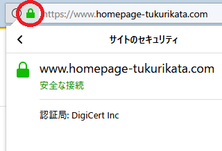
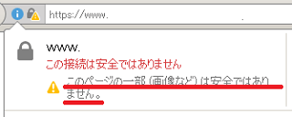

独自SSLの設定でHTTPS化
ホームページにSSL（Secure Sockets Layer）を導入することで、ブラウザとサーバー間の通信を暗号化することができます。これにより、第三者に通信が盗聴されても内容を解読できなくなるため、サイトの改ざんやなりすましといった行為を防ぐことができます。
現在ではこの「SSL」がバージョンアップした「TLS」（Transport Layer Security）の技術が採用されていますが、昔からあるSSLの名称が広く普及しているため、今でもそのままSSLと呼ばれています。あるいは「SSL/TLS」などと呼ばれることもあります。
ホームページがこのSSL通信に対応している場合、通常の「http」にセキュアの「s」が付いた「https」のURLで表示されます。
また、ブラウザ上で鍵マークをクリックすることでも確認できます。
(例：Firefoxの場合)

このSSLについては、以前までは金銭を扱う金融機関やクレジット決済のショッピングサイト、あるいはメールフォームで個人情報を入力する企業サイトぐらいしか対応していませんでした。
けれども、2014年にグーグルがhttps対応を検索順位のランキング要素にすると発表したことで、個人サイトでもSEO対策上の理由で導入する人が多くなってきています。
共有SSLと独自SSLの違い
レンタルサーバーによっては「共有SSL」を無料で利用できることもありますが、この共有SSLはレンタルサーバー会社提供のURLになるため、他サイトのURLで表示されることになり、SSLの信頼性としてはいまいちです。
一方、この共有SSLに対し、自サイトのドメイン名でSSLに対応することは「独自SSL」などと呼ばれています。現在、「共有SSL」はほとんど利用されなくなってきており、この「独自SSL」が主流になっています。
自分のサイトを独自SSLに対応する場合、具体的には認証された「SSLサーバー証明書」をサーバーにインストールして利用することになります。
サーバーでの証明書になるため、基本的にはドメインの取得事業者ではなく、お使いのレンタルサーバー会社でSSLの申込みをするのが一般的です。
この独自SSLの利用料金には幅があり、SSLブランドや認証の難易度によって年間で無料～数十万円程度の違いがあります。
利用料金にかなり差がある理由については、「専用IPアドレス付与の有無」や「サイトシールの有無」、「携帯サイトへの対応率」、「ブランドイメージ」、あるいは「認証レベルの違い」によるものです。
また、最近では無料で利用できる「Let's Encrypt」なども出てきていますが、無料でも有料でも暗号化についての技術的な違いはほぼなく、安全性が劣るということはありません。
ただし、認証のプロセスにおいて、自動で認証されるよりもメール認証や電話などによる実在確認をしている方がやはり信頼性は高いです。
無料SSLの場合、たとえ技術的には安全に通信できたとしても、そもそも相手が悪意のあるユーザーであるかまでは確認できないため、信頼性はいまいちになってしまう側面があります。企業サイトではできるだけ有名ブランドのSSLを選択されることをおすすめします。
SSLブランドの種類による利用料金の違い
有名なSSLブランドには、シマンテック（旧ベリサイン）やグローバルサイン、あるいはジオトラストなどがありますが、知名度の高いブランドは簡単なメール認証によるタイプでも利用料金は高額になりがちです。
■有名ブランドのSSL
- シマンテック（旧ベリサイン）
- グローバルサイン
- ジオトラスト
- セコム
- サイバートラスト
基本的には「ひとつのIPアドレスにひとつのSSL証明書」しか発行されないため、レンタルサーバー側からSSL専用のIPアドレスが渡されることになり、これが元で費用が高額になる傾向があります。
一方、格安のSSLブランドには「RapidSSL」や「CoreSSL」などがあり、年間数千円程度でも利用することができます。また、最近は無料の「Let's Encrypt」にも人気が集まっています。
■格安のSSLブランド
- RapidSSL
- CoreSSL
- Let's Encrypt（無償）
高額なSSLブランドではひとつのIPアドレスにひとつの証明書しか発行されませんが、これらの格安SSLや無料SSLの多くは「SNI」と呼ばれるネームベースでのSSLとなっており、他のユーザーも同じIPアドレスを使うことになります。
個人サイトの場合は無料や格安の独自SSLでも特に問題はないため、「Let's Encrypt」などに対応しているレンタルサーバーを利用されるとよいでしょう。
■「無料独自SSL」対応のレンタルサーバー一覧
- エックスサーバー（Let's Encrypt、CoreSSL、Rapid SSLなど）
- さくらインターネット（Let's Encrypt、Rapid SSLなど）
- お名前.comレンタルサーバー（Let's Encrypt、アルファSSLなど）
- ロリポップ（Let's Encrypt）
- スターサーバー（Let's Encrypt）
- コアサーバー（Let's Encrypt）
- ヘテムル（Let's Encrypt）
- WebARENA（ウェブアリーナ） （Let's Encrypt）
- エクストリム （Let's Encrypt）
- JSNレンタルサーバー （Let's Encrypt）
できるだけ専用IPアドレスが付与されるタイプがベストですが、利用料金が高額になる傾向があるため、個人サイトの場合はSNIベースの格安SSLや無料SSLでも特に問題はないでしょう。
独自SSL設定後にはサイト全体の修正が必要
SSLを正常に設定するには、そのページで読み込むリソースについても「HTTPS」に対応している必要があるため、大規模なサイトを修正する場合には手間がかかります。
ホームページの画像についても「HTTPS」のURLから読み込むように修正したり、外部プラグインについても「HTTPS」に対応したものを使用するなど、適切な修正がされていないとブラウザ上で安全性が確立されていないと出てしまいます。

いわゆる「混合コンテンツ」と呼ばれるものになりますが、「HTTP」と「HTTPS」の両方から読み込まれている場合はSSL通信の意味がなくなってしまうため、「HTTPS」のみに統一する必要があります。
この場合の具体的な修正方法については、こちらのページをご参照ください。
→ SSL設定後のホームページ修正方法
せっかくSSLを導入したとしても、このような黄色い警告が表示されてしまうとかえって逆効果になってしまいます。大規模サイトの場合、サイト内の全ページを修正するには時間がかかるため、タイミングを見てSSLを導入されることをおすすめします。
特に、アフィリエイト広告を掲載している場合、アクセス数の計測で「1px」の小さな画像がASPのサーバーから読み込まれるのが一般的です。
ASPによってはこの小さな画像が「HTTPS」に対応していないことが多く、通常の「HTTPページ」から読み込まれてしまうため、現時点では広告がSSLに非対応のケースも多いです。そのため、広告掲載はしずらくなるデメリットもあるかもしれません。
（※追記：2019年の現在、各ASPにてHTTPSにほぼ対応しています。）
SSLを導入する際は、上記のようなデメリットについても事前によく確認しておくようにしましょう。
SSLサーバ証明書の認証方法による違い
一般的に、SSL証明書の認証レベルには「ドメイン認証」と「企業認証」、そして「EV認証」の3種類があります。
ドメイン認証
ドメイン認証は、wohis情報にメールを送信するなどしてドメインの所有権を認証するものです。格安SSLなどで多い簡易的な認証方法になります。企業認証
企業情報データベースや電話連絡などで企業の法的な実在性を確認する認証方法になります。EV認証
大企業の場合など、実際の組織内の担当者レベルまで調査するため、非常に信頼性が高い認証方法になります。
このうち、「企業認証」と「EV認証」については法人でしか利用できないため、個人ユーザーは簡易的な「ドメイン認証」を利用するのが一般的です。
簡易的なドメイン認証の場合、たとえ暗号化されて安全に通信できたとしても、そもそもの通信する相手が悪意のあるユーザーである可能性は否定できません。悪意のある人でもSSLを利用できてしまうため、他と比較すると信頼性について多少は劣ってしまうかもしれません。
けれども、ドメイン認証でもHTTP対応で通信が暗号化されることにより、少なくとも第三者によるなりすましや改ざん、盗聴といった行為は防ぐことができます。個人サイトの場合は実在認証までは必要ないため、簡易的なドメイン認証でも十分といえるでしょう。
SSL対応のメリットとデメリット
■メリット
このSSLへの対応は、個人情報を扱う企業サイトやクレジット決済が必要なショッピングサイトでは必須の要素といえます。盗聴されてクレジットカードなどの個人情報が流出したり、あるいは注文情報が改ざんされて大量の注文がされるなどのリスクがあるため、通信を暗号化して安全性を確立しておく必要があります。
このSSLに対応することにより、ユーザーは安心して購入することができるため、購入率がアップするメリットが期待できます。
また、2014年にグーグルが「HTTPS をランキング シグナルに使用します」と発表したことで、SEO対策上のメリットも期待できます。このSEO対策の理由により、最近では企業サイトのみならず、個人サイトでもSSLを導入するホームページが増えてきました。
現在のところ、このhttpsページ対応による検索順位への影響は1%未満にすぎず、SEO効果のメリットはほんのわずかではありますが、今後は長い時間をかけて強化されていくとのことです。
■デメリット
デメリットについては、正しく設定しておかないと「安全ではない」という表示がされてしまうため、かえって逆効果になってしまう可能性があります。
加えて、SSLブランドや認証レベルによっては、数万円～数十万円程度の高額な費用がかかってしまうこともあります。
また、スマートフォンへの対応率はよいものの、フィーチャーホン（いわゆるガラケー）への対応率が低いブランドもあり、ガラケー対応の携帯サイトを作成している運営者にとっては、アクセス数が減少してしまう可能性もあります。
さらに、SSLに対応した後にサーバーを移転するとなった際、移転先のサーバーでも再度認証が必要となるため、認証が済むまではHTTPSページが表示されなくなり、場合によっては数日間サイトがダウンしてしまう可能性も出てきます。
いずれにしても、SEO対策上の理由により、今後はSSL導入は必須になるものと思われます。
次のページ → サイトにSSLを導入する際の実際の手順